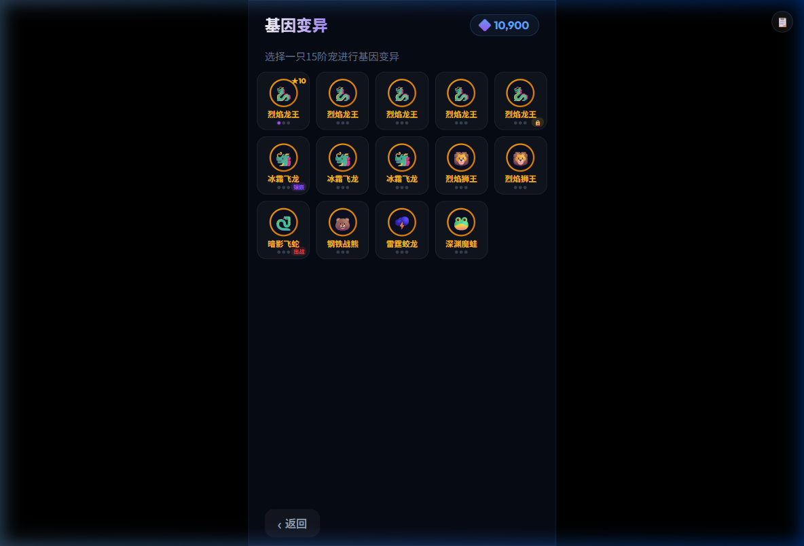
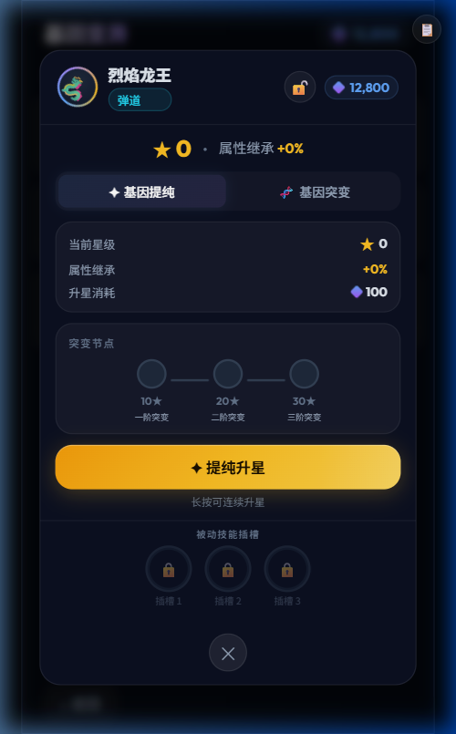
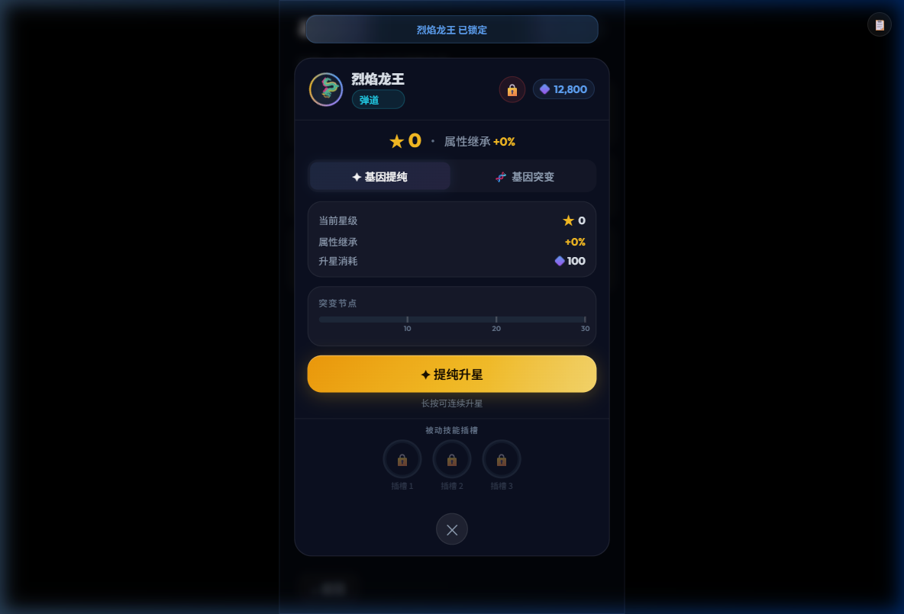
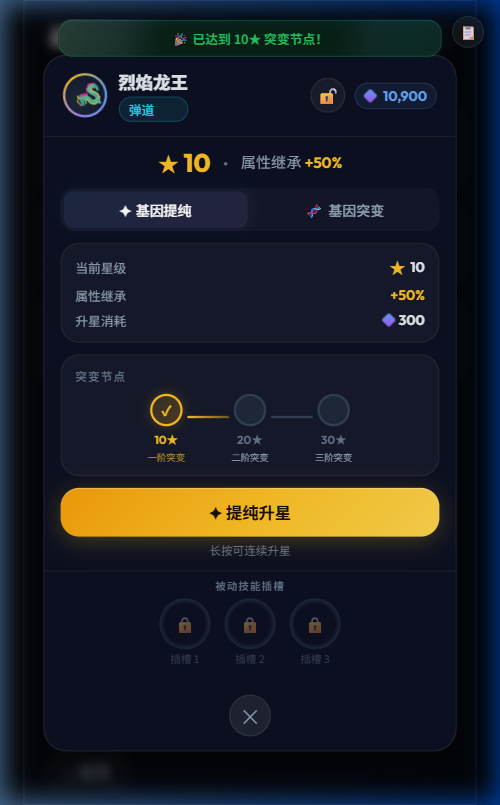
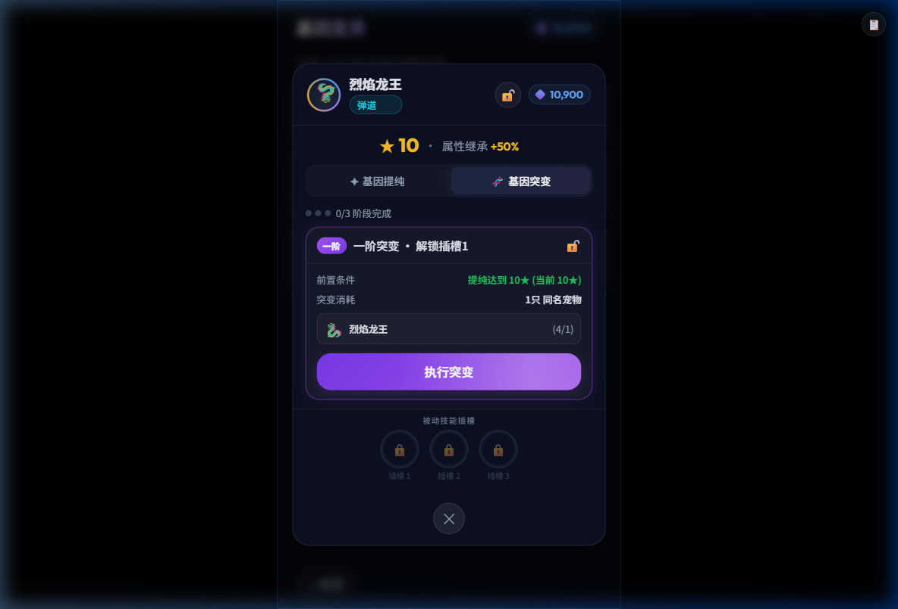
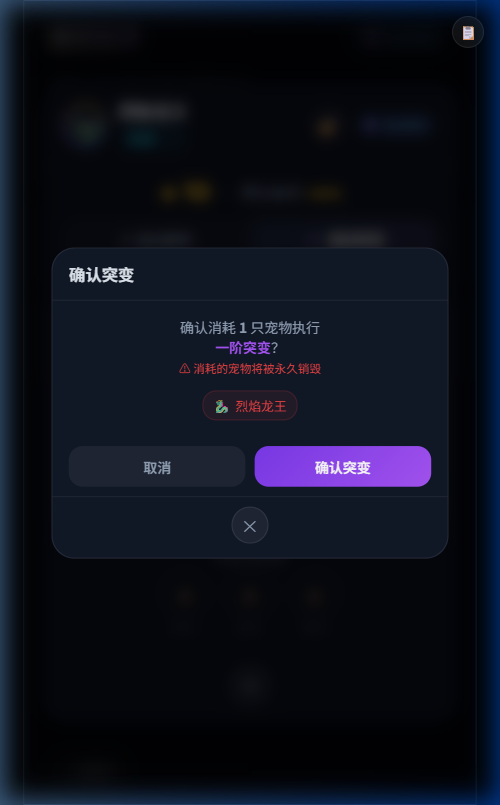
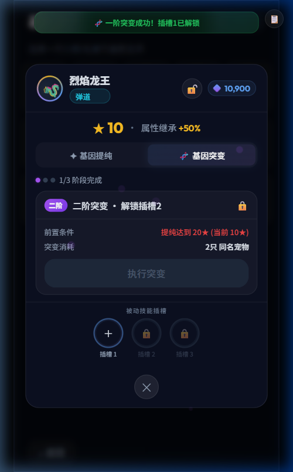
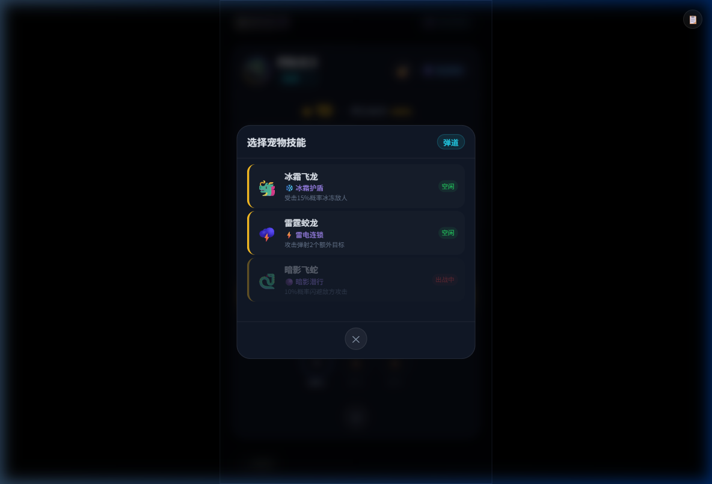
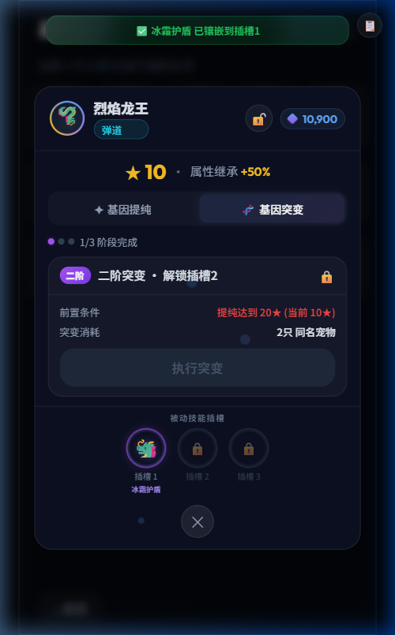

player.geneFragments，全局共享货币，提纯时扣减pet.emoji + pet.name。所有宠物统一金色圆环（全部15阶），无品质字母pet.mutationLevel（0~3），每完成1阶填1个紫色dotpet.name。同名宠物独立显示为多张卡片（不可堆叠），因为每只是独立资产需要作为突变材料消耗pet.status 显示：「出战」(红) / 「镶嵌」(紫) / 「🔒」(已锁定)。空闲状态不显示pet.star > 0 时显示「★N」。取值 pet.star，范围0~30allPets 数组长度渲染
pet.emoji + 彩虹旋转圆环（纯装饰动画）。旁显 pet.name + pet.attackTag（弹道/近战/范围）player.geneFragments，提纯扣减后实时更新pet.isLocked。🔓=未锁，🔒=已锁(红底)。锁定后该宠物不会出现在突变材料候选中pet.star · 属性继承 +{pet.star×5}%。属性继承=战斗属性加成比例pet.star，范围 0~30pet.star × 5%，如10★=+50%100 + pet.star × 20。如0★→1★消耗100，10★→11★消耗300pet.star/30 × 100%。标记位：10(33%) / 20(66%) / 30(100%)，达到时标记变金色pet.star++。碎片不足时按钮禁用+抖动。支持长按连续升星（400ms后每80ms触发一次）pet.slots[0~2]。初始全锁定🔒。解锁条件：完成对应阶突变（一阶→插槽1，二阶→插槽2，三阶→插槽3）。已解锁显示「＋」，已镶嵌显示副宠emoji+技能名
pet.isLocked = true 时，该宠物从突变材料候选列表中排除，选择页卡片显示🔒角标pet.isLocked = false，恢复为🔓，宠物可被正常消耗
pet.star 命中 10/20/30 时触发特殊庆祝Toast「🎉 已达到 N★ 突变节点！」，停留3秒pet.star=10，属性继承变为 +50%pet.star >= 10 → 添加 .reached classΣ(100+n×20) n=0~9 = 1900碎片。余额 12800→10900
MUTATION_STAGES[pet.mutationLevel]。已完成用绿色pet.mutationLevel + 1stage.starReq★ (当前 pet.star★)」。绿色=满足(pet.star >= starReq)，红色=不满足。三阶依次要求 10/20/30★stage.petCost只 同名宠物」。三阶梯度：1→2→4只。同名=相同 configIdpet.emoji + pet.name + (可用/需要)。可用数 = allPets.filter(同configId && idle && !isLocked && id≠主宠).lengthpet.star >= starReq && 可用材料 >= petCost。不满足时按钮灰色禁用pet.mutationLevel/3 阶段完成」。dot填充紫色数 = mutationLevel
stage.petCost 只宠物执行 N阶突变？」动态显示阶段和数量allPets 数组中 splice 删除emoji + name 红色标签。系统自动选择战力最低的同名宠物优先消耗pet.mutationLevel++，解锁对应插槽 pet.slots[idx].unlocked=true
starReq=20, petCost=2。若三阶全部完成，显示「基因突变已全部完成」pet.slots[0].unlocked = true。显示从🔒变为「＋」蓝色发光圆环，点击 → 打开技能选择弹窗
pet.attackTag。只显示攻击类型相同且拥有 passiveSkill 的宠物pet.name，粗体显示pet.passiveSkill.icon + pet.passiveSkill.name，紫色高亮pet.passiveSkill.desc，灰色小字，说明技能效果数值
embeddedPet.emoji。pet.slots[idx].embeddedPetId = selectedPet.id，副宠 status 变为 'embedded'embeddedPet.passiveSkill.name，紫色文字。点击已镶嵌插槽 → 重新打开技能选择弹窗，可更换或卸下